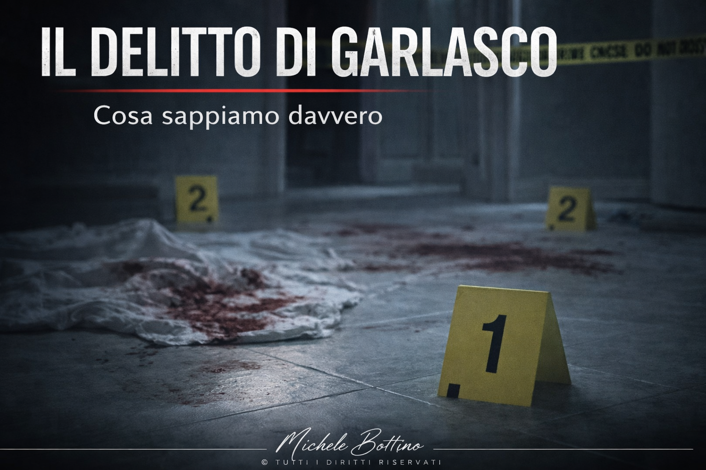

Caso reale
Il caso Angela Celentano
Ricostruzione documentale e analisi strutturale.
Tag: Monte Faito, scomparsa, pista turca
Leggi l’articolo
Questa sezione raccoglie casi reali, casi storici e analisi documentarie pubblicate sul sito. Ogni testo è organizzato secondo una struttura editoriale stabile, con attenzione alla chiarezza espositiva e alla tenuta documentaria.
Accanto alla sezione Articoli, il sito ospita anche la serie Strutture dell’irrisolto, dedicata alla lettura metodologica dei casi documentali già pubblicati.
Vai a Strutture dell’irrisolto
Il primo caso moderno di serialità senza soluzione.
Ricostruzione documentale e analisi strutturale.

Una scomparsa senza punto di convergenza.

Ricostruzione documentale e analisi strutturale.

La verità costruita pezzo per pezzo.
Laura Lanza, il delitto del 1563 e ciò che i documenti permettono realmente di affermare.
Tra evidenza tecnica, giudicato parziale, nuove istanze e persistenza narrativa.

Tra giudicato definitivo, quadro indiziario e nuova fase investigativa.

Cosa sappiamo davvero e cosa non sapremo mai.

La centralità della prova scientifica e i limiti della ricostruzione.

Convergenza giudiziaria e persistenza del conflitto narrativo.
Una struttura aperta tra piste concorrenti e assenza di convergenza.

Un triplice omicidio ancora in fase di definizione investigativa.